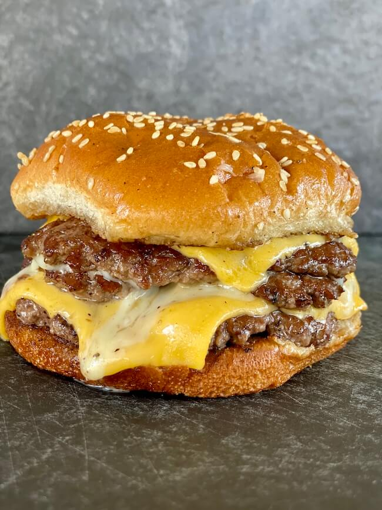

Smash Burger

Description
Smash burgers are a quick and delicious meal to make for a family.
Ingredients
- 80/20 ground beef
- Salt
- Pepper
- Garlic powder
- Canola oil
- American cheese
- Hamburger buns
Steps
- Divide ground beef into loose balls and season with salt, pepper, and garlic powder.
- Heat a large pan over medium-high heat until very hot and add canola oil.
- Put 2 balls into the pan at a time and smash them with a spatula as much as possible.
- Cook until brown on one side, flip, and put a slice of cheese on top.
- Once the other side of the patty is brown, place the patties on a bun with whatever toppings you enjoy.
Back to Home